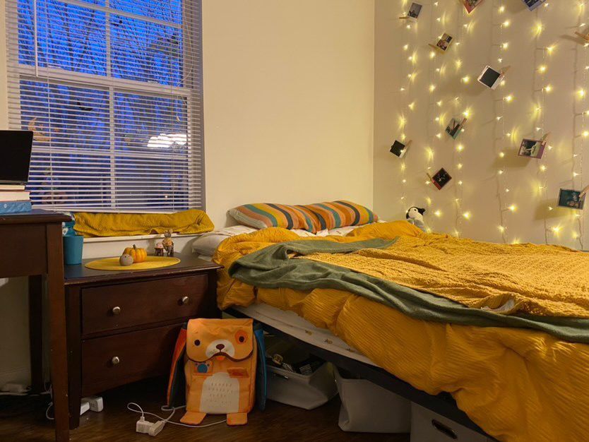
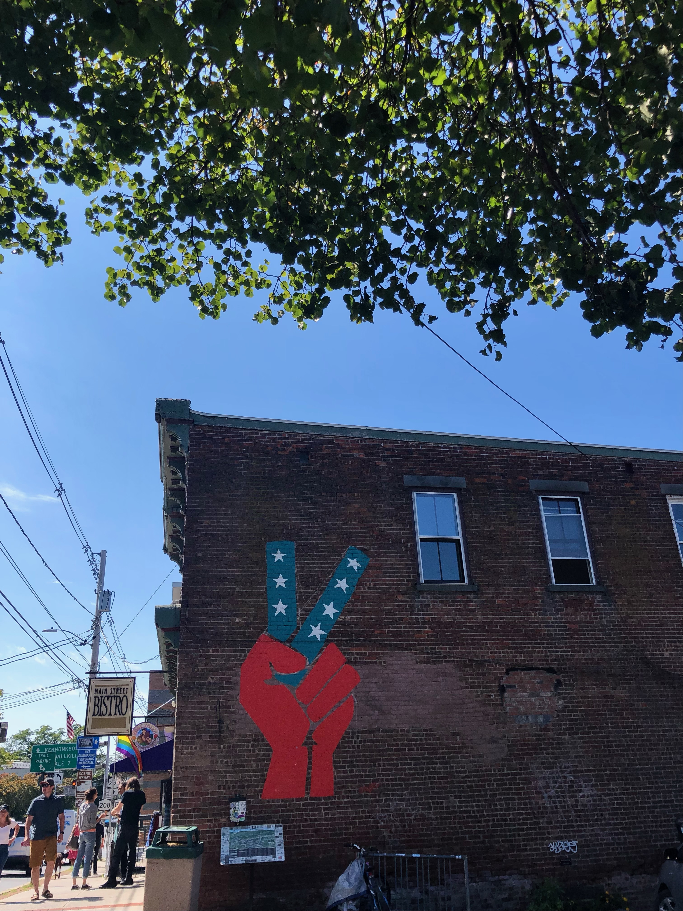
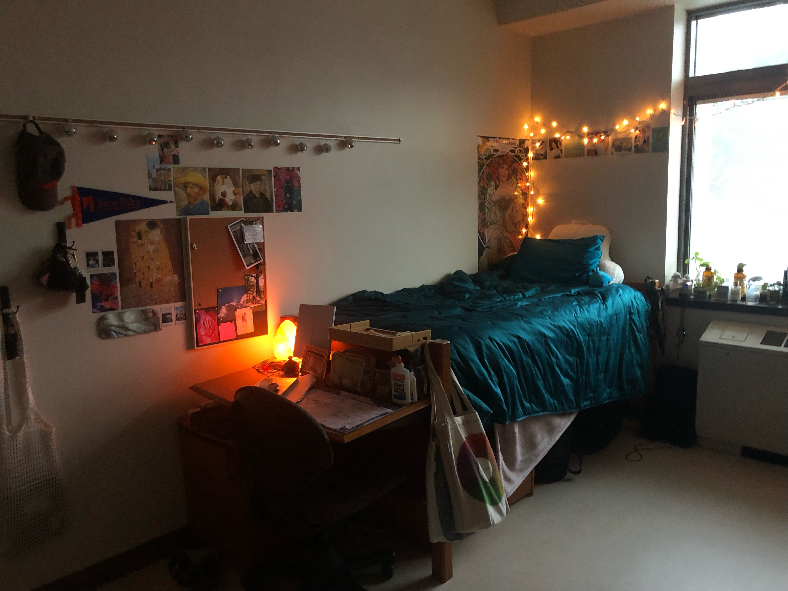

For most of us, the transition from high school to the real world is a familiar feeling. It is a pretty big system shock, leaving a well-structured environment for complete freedom. If students chose to go to college, they are immediately greeted with a few pretty glaring decisions. What to study, where to go, should you leave home- these are all questions most college goers are familiar with. However, thousands of students make these choices every year and begin their life as adults by moving many hours- and miles away from home.
Nick Passanese is one of these students, and shares a similar story to the one detailed above. “I wanted to go away, but, around the time I was graduating there was this general feeling of being stuck,” Nick says, reminiscing on his past.  Nick, like many other students, didn’t quite know what to do or where to go with his future. He knew he wanted to get into art and animation, but didn’t quite know how and where to go about doing it. He could go to a local school to stay with his family but take lower quality courses, or move away from everything he’s ever known to get a better education. “Now I can tell, I felt disillusioned, like I wasn’t going to get there by staying in the area so I kind of felt the need to go anywhere I could to push myself to go out of my comfort zone,” Nick states. Clearly, it was an important decision to make.
While moving away from home can prove to be a scary and unsettling process, there are many reasons why it can be beneficial for students. Students like Taylor move away to facilitate creativity and independence. “I chose to go down to New Paltz because I wanted to become my own independent person. I am double majoring in Art History and a BFA in ceramics. I felt as though the location in the artsy Hudson valley would facilitate a really creative environment- and I was right!” Taylor loves New Paltz and says it's the school of her dreams, “It compartmentalizes my school life from coming home and my personal life,” she says.
Other students, like Erika, simply want to experience different places and travel to become more worldly. “I moved because I wanted a different view, different country sides,” Erika says, as she’s lived in Western New York her whole life. She moved to Utah State University to study business, and she really just wanted to get away from home. I wanted to get out of my hometown…I feel like a lot of people end up getting stuck in Lewiston,” she comments.
Whatever the reason may be for students leaving the area, they always carry a love for their home with them. “I really do like visiting home though, because a lot of my friends are here,” Erika comments. “I do, of course, miss little domestic things about being home, and not living in a dorm. It makes me appreciate Lewiston a little more,” Taylor states, before mentioning that she is indeed moving back home after school. Erika also mentions that she plans on coming home after school, because she does not want to permanently live away from her family and friends. As for Nick, he has other plans…He intends to pursue a career in animation- a job that requires him to move to remote places like California or Texas. Though, he will definitely visit home, and often.

For students, entering college is a whirlwind time, but a worthwhile one for many. While many students may leave Western New York to attend other schools, many also stay. Ultimately, it really boils down to the individual, what they want to do, and where they aim to go in life. “I realized there was something more I wanted to do with my life, and whatever was available to me in Western New York wasn’t going to let me get there,” Nick commented to close out his interview. Wherever life ends up taking Nick and his friends, they will always have a soft spot for home.